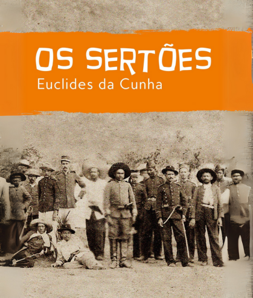

O Pré-Modernismo foi um período de transição na literatura brasileira, entre o fim do século XIX e o início do século XX, culminando na Semana de Arte Moderna de 1922. As obras desse período se caracterizam pela crítica social, linguagem mais acessível e pela representação de personagens marginalizados ou esquecidos. A seguir, conheça as obras mais importantes:
0:00 / 0:00
Tudo sobre as Obras Mais Famosas do Pré-Modernismo
Os Sertões – Euclides da Cunha (1902)

Os Sertões é considerada a principal obra do Pré-Modernismo brasileiro. Escrita por Euclides da Cunha, ela mistura elementos de literatura, jornalismo, sociologia, geografia e história. O autor acompanhou de perto a Guerra de Canudos, conflito ocorrido no sertão baiano, e escreveu uma análise detalhada sobre o episódio e a realidade do sertanejo.
A obra é dividida em três partes:
- A Terra – descrever o sertão nordestino em sua geografia e clima.
- O Homem – analisa o sertanejo, mostrando-o como forte, resistente e fruto de seu ambiente.
- A Luta – narra os acontecimentos da Guerra de Canudos e critica a violência do Exército contra os sertanejos liderados por Antônio Conselheiro.
A obra é uma crítica ao preconceito das elites contra o interior do Brasil e à exclusão dos pobres. Também mostra o abismo entre o Brasil urbano e o rural, trazendo à tona a realidade do povo nordestino.
Triste Fim de Policarpo Quaresma – Lima Barreto (1911)
Lima Barreto escreveu essa obra como uma sátira ao nacionalismo exagerado e à hipocrisia da sociedade brasileira da Primeira República. Policarpo Quaresma, o protagonista, é um funcionário público ingênuo e extremamente patriota que deseja valorizar a cultura nacional.
Ele defende ideias utópicas como tornar o tupi a língua oficial do Brasil, cultivar a terra de forma idealizada e lutar pelo país no governo. No entanto, todas as suas iniciativas fracassam, levando-o à prisão e à morte.
.png)
A obra critica:
- A burocracia estatal.
- O militarismo autoritário.
- O preconceito racial e social.
- A ilusão do nacionalismo romântico.
É uma obra que mostra como o idealismo isolado pode ser sufocado por uma sociedade injusta e atrasada.
Urupês – Monteiro Lobato (1918)
.png)
Essa obra é uma coletânea de contos que denuncia a situação do homem do campo no interior paulista. O conto mais famoso da coletânea é Urupês, que apresenta o personagem Jeca Tatu – símbolo do caipira preguiçoso, doente e ignorado pelas autoridades.
Monteiro Lobato usa o personagem para criticar o abandono do povo rural pelo Estado, mostrando que a miséria do caipira não é resultado de preguiça, mas de abandono social e falta de assistência.
Temas abordados:
- Problemas agrários.
- Falta de educação.
- Miséria rural.
- Contraste entre progresso urbano e atraso no campo.
Urupês foi um marco na conscientização social sobre o Brasil rural.
Canaã – Graça Aranha (1902)
Canaã foi uma das primeiras obras a discutir o impacto da imigração europeia no Brasil. A história se passa no Espírito Santo e mostra o conflito entre dois imigrantes alemães com visões de mundo opostas: Milkau, idealista e sonhador, e Lentz, racista e violento.
.png)
A obra trata de:
- Conflitos culturais entre imigrantes e brasileiros.
- A busca por uma identidade nacional.
- O preconceito racial e social.
- A formação do Brasil moderno.
Graça Aranha utilizou o romance para discutir o papel dos estrangeiros na construção da nação brasileira e a necessidade de integração e compreensão entre diferentes culturas.
Eu – Augusto dos Anjos (1912)
.png)
Embora tenha apenas um livro publicado, Augusto dos Anjos é uma figura única no Pré-Modernismo. Seu livro Eu é uma coletânea de poemas marcados por uma linguagem científica, temas existencialistas e um estilo sombrio e filosófico.
Os poemas tratam da morte, da decomposição, da angústia existencial, da passagem do tempo e da solidão humana. Apesar de sua linguagem incomum para a época, os versos são profundamente emocionais.
Destaques da obra:
- Mistura de ciência e lirismo.
- Uso de vocabulário técnico.
- Pessimismo e melancolia.
- Reflexões sobre a natureza humana.
Sua poesia foge dos padrões clássicos e antecipa o experimentalismo modernista.